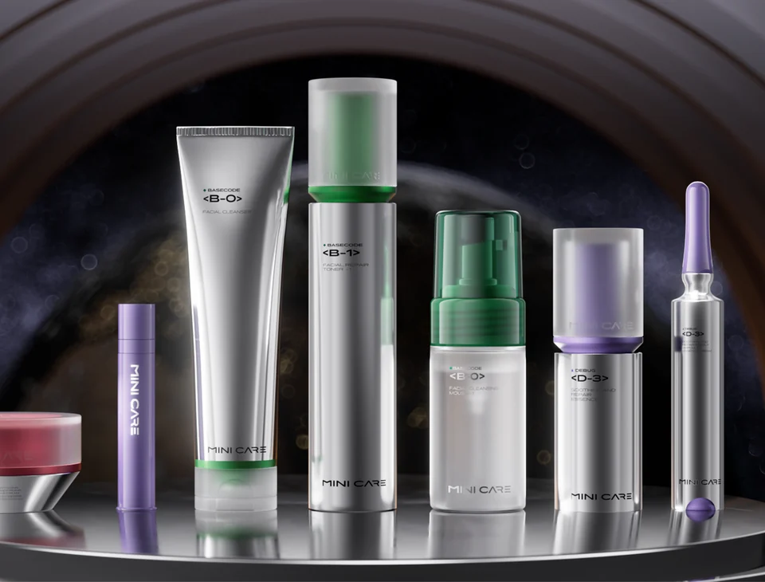
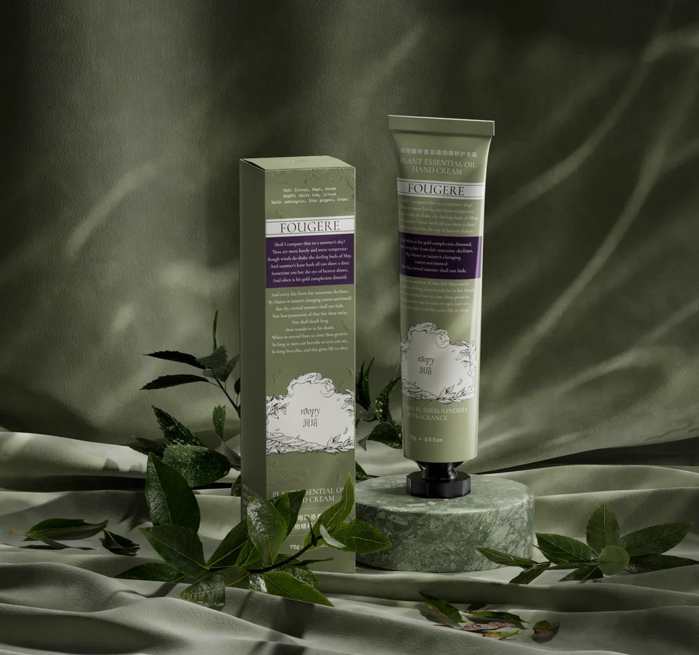
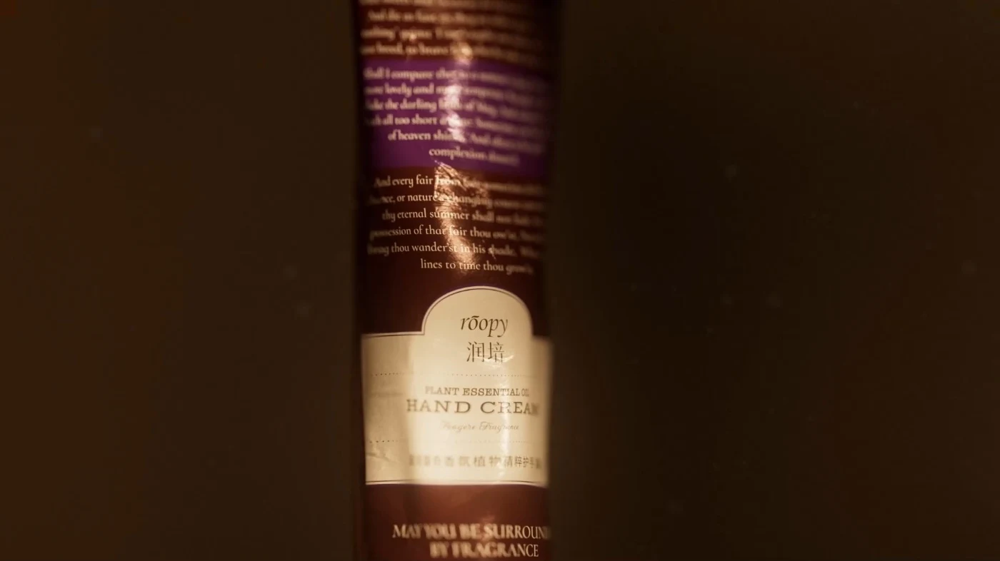
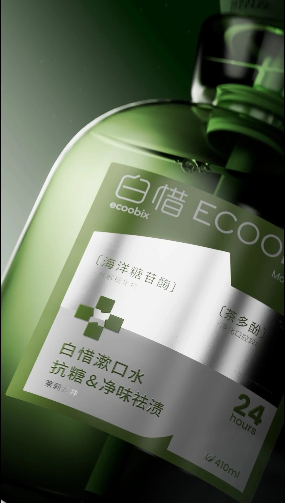
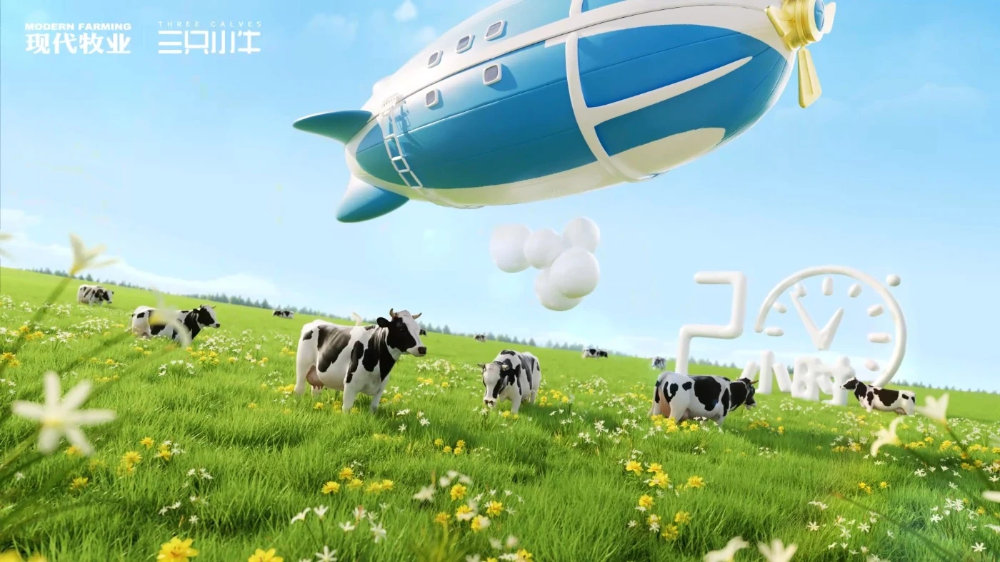
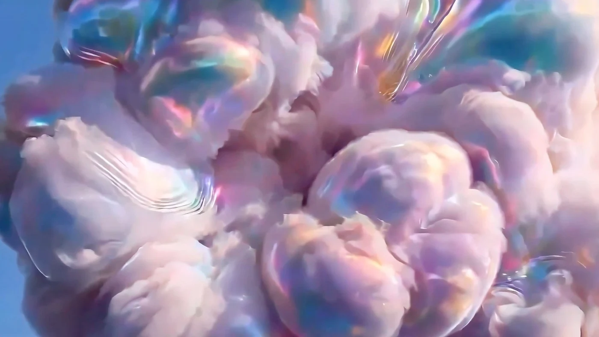
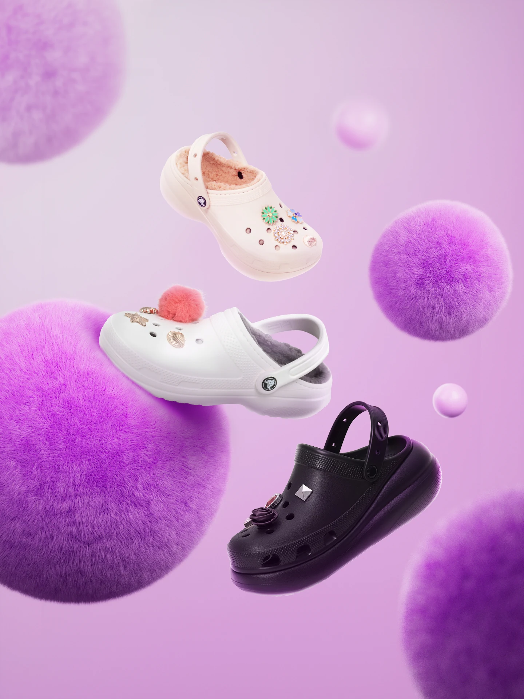
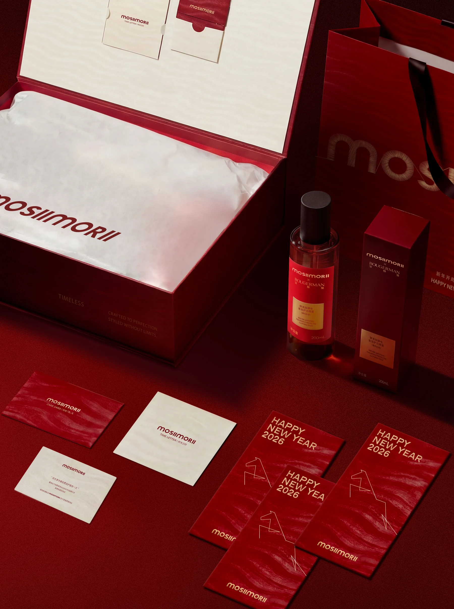
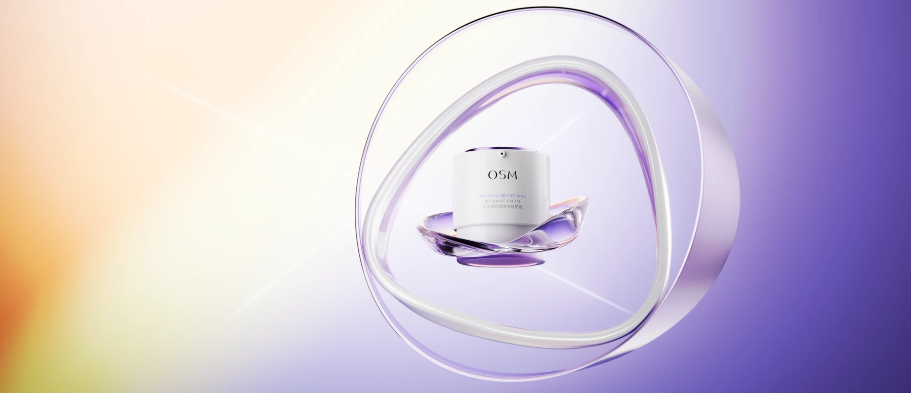
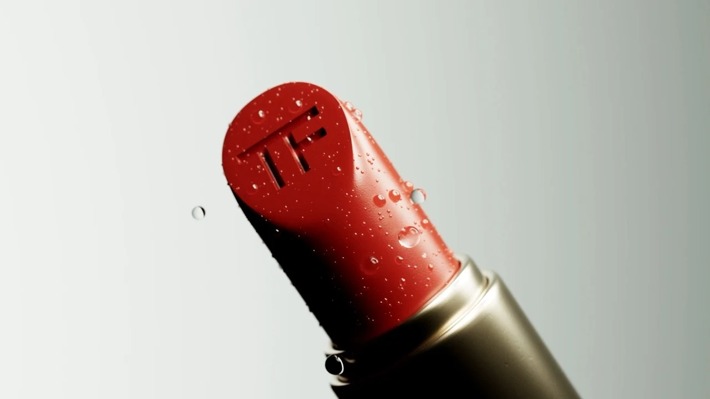

查看项目 00:38[XY.001]MINICARE / 元点系列

查看项目 查看项目
查看项目

查看项目 00:33
查看项目 00:14
查看项目 00:20 查看项目 00:21
查看项目 00:21

查看项目 00:21 查看项目 00:43
查看项目 00:43
 查看项目
查看项目

查看项目 00:03
查看项目 00:27
查看项目 00:07
查看项目 00:08每一帧，都是一次新的观看。滚动 / 拖动以探索
01 / 15